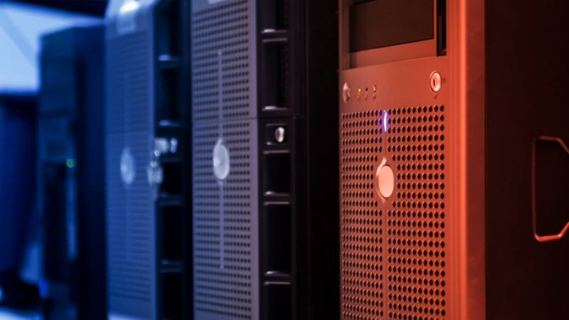
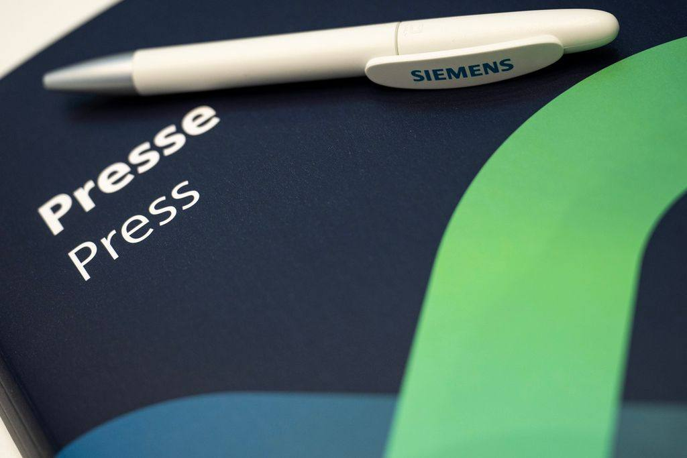
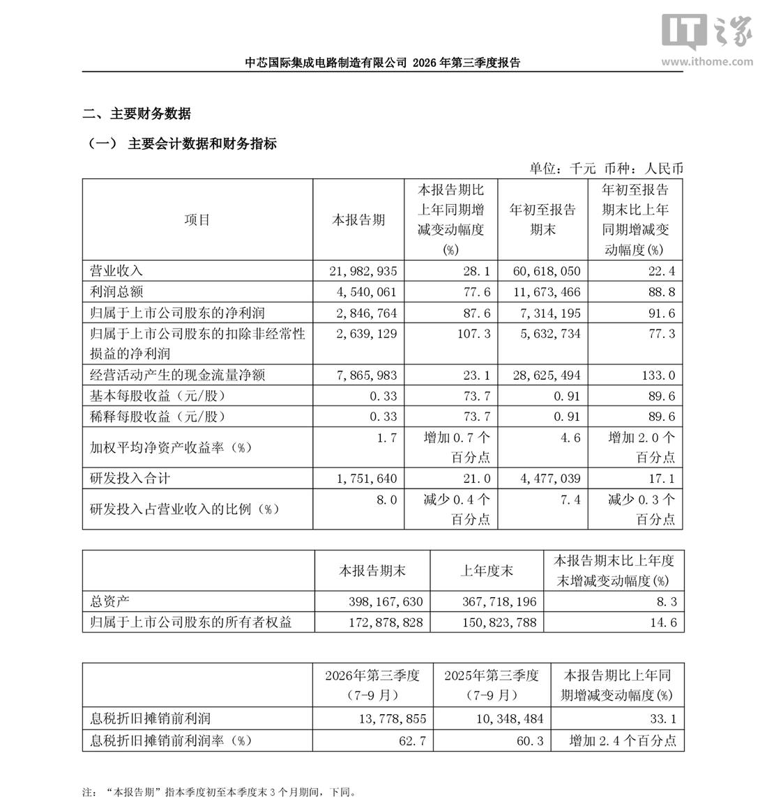
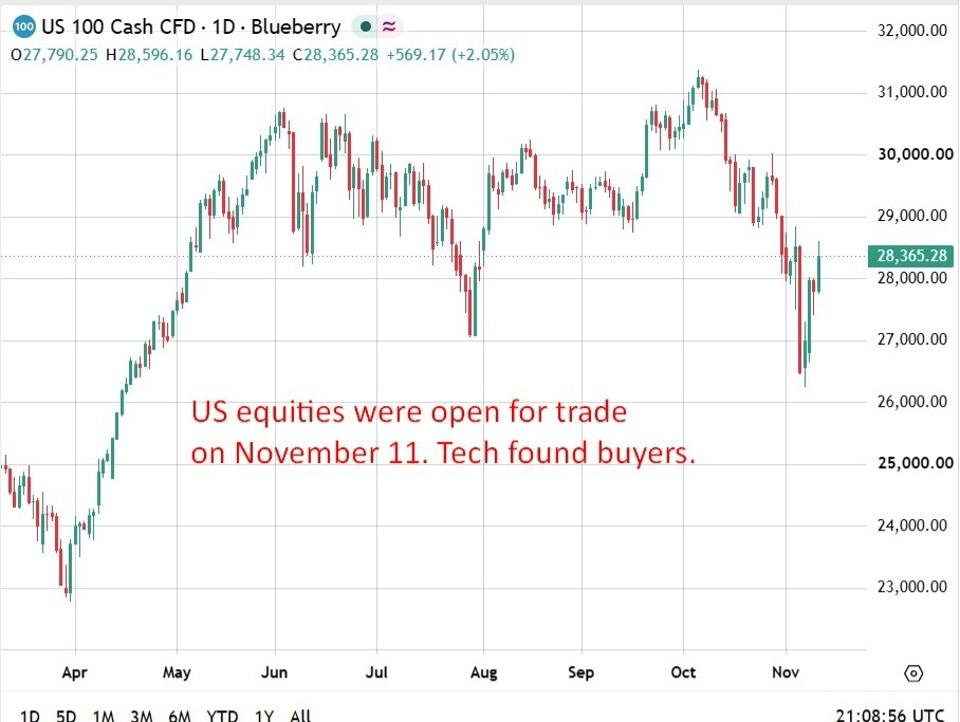
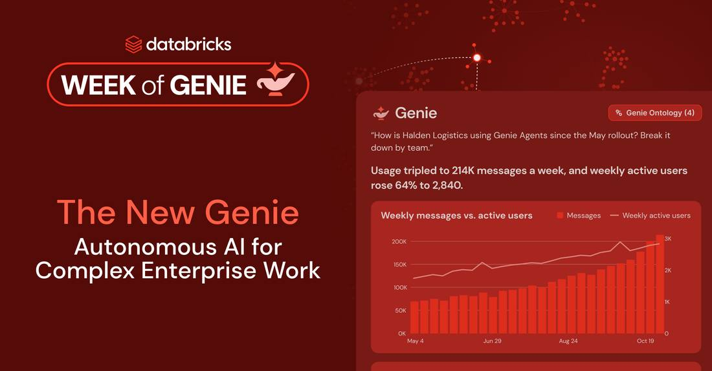

Facts first
Reporting and analysis are kept apart on every page. Sources and uncertainty are stated, not buried.

AWS released AWS Emulator on November 11, 2026, a free local emulator of AWS services that runs on a developer's own machine, and says autonomous AI agents wrote every line of it in Rust, with no human on the team writing or reviewing any code. The emulator is built from 438 AWS API models covering more than 200 services, its source is public on GitHub under a CC0 license, and Simon Willison counted 29,684 commits in its first three weeks. The limits are stated plainly: it does not evaluate IAM policies the way AWS does, it acts as a single account, and it is not for production or security testing.
 Anthropic Says It Has Met Its Own AI Safety Threshold as AI Speeds Up Its ResearchUpdate to the Anthropic IPO flashes: Anthropic told the SEC in its November 10 IPO prospectus amendment that it has met its own Responsible Scaling Policy threshold for dramatically accelerated AI-driven progress, moving from 'may imminently meet' on November 2 to 'has met' in eight days. The basis is internal estimates and expectations for future models, not observations from current models. METR's November 5 assessment put Anthropic's pace at about 1.9 times its earlier rate since October 2025, with perhaps 80 percent of the speed-up from AI, called the estimates highly uncertain, and said it is plausible the threshold was crossed by July 15. Meeting the threshold triggers additional safeguards, not a halt. IPO pricing is November 18, trading starts November 19 under ticker ANT.
Anthropic Says It Has Met Its Own AI Safety Threshold as AI Speeds Up Its ResearchUpdate to the Anthropic IPO flashes: Anthropic told the SEC in its November 10 IPO prospectus amendment that it has met its own Responsible Scaling Policy threshold for dramatically accelerated AI-driven progress, moving from 'may imminently meet' on November 2 to 'has met' in eight days. The basis is internal estimates and expectations for future models, not observations from current models. METR's November 5 assessment put Anthropic's pace at about 1.9 times its earlier rate since October 2025, with perhaps 80 percent of the speed-up from AI, called the estimates highly uncertain, and said it is plausible the threshold was crossed by July 15. Meeting the threshold triggers additional safeguards, not a halt. IPO pricing is November 18, trading starts November 19 under ticker ANT.
Quanta Posts Record Revenue of NT$1.12 Trillion as AI Servers Take Over 80% of SalesQuanta Computer reported record third-quarter revenue of NT$1.1155 trillion, up 125.2% year on year, as AI servers drove the biggest quarter in the company's history. Gross margin slipped to 4.75% from 6.85% a year earlier as pricier AI racks and rising notebook material costs squeezed profitability, though net profit still climbed 73% to NT$28.42 billion. Servers made up more than 80% of revenue, with AI servers at 75% to 80% of server sales, and management guided servers to 85% to 90% of revenue in 2027.
Siemens Closes Fiscal 2026 With Record €34.8 Billion in Orders as AI Data Centers Drive DemandSiemens reported fourth-quarter orders of 34.77 billion euros, up 58% year on year to a quarterly record, as data-center contracts and a 2.4 billion euro German high-speed train order lifted the book. Industrial profit rose 22% to a record 3.89 billion euros, beating the 3.71 billion euro consensus, and revenue rose 11% to 23.68 billion euros. For fiscal 2026, orders reached a record 108.2 billion euros and the backlog hit 143 billion euros. Siemens raised its mid-term growth target to 7% to 11% a year and guided fiscal 2027 revenue growth of 9% to 11%.
SMIC Q3 Revenue Hits Record $3.19 Billion as Margin Jumps to 29.9%, Beating ForecastsSMIC reported record third-quarter revenue of $3.19 billion, up 33.9% year on year, with gross margin jumping to 29.9% from 25.3% in the second quarter, beating the Visible Alpha consensus on both revenue and profit. Profit attributable to owners was $428.4 million, up 123.4% year on year. Fourth-quarter guidance is revenue growth of 4% to 6% sequentially with gross margin of 26% to 28%.| WORLD & POLICY | 15 |
| MARKETS & INDUSTRY | 102 |
| AI FRONTIER | 155 |
| ROBOTICS & AI | 23 |
| WEB3 INFRASTRUCTURE | 4 |
| RESEARCH & SCIENCE | 6 |
AWS Ships a Local Cloud Its Agents Built Alone: No Human Wrote or Reviewed the CodeAWS released AWS Emulator on November 11, 2026, a free local emulator of AWS services that runs on a developer's own machine, and says autonomous AI agents wrote every line of it in Rust, with no human on the team writing or reviewing any code. The emulator is built from 438 AWS API models covering more than 200 services, its source is public on GitHub under a CC0 license, and Simon Willison counted 29,684 commits in its first three weeks. The limits are stated plainly: it does not evaluate IAM policies the way AWS does, it acts as a single account, and it is not for production or security testing.Anthropic Says It Has Met Its Own AI Safety Threshold as AI Speeds Up Its ResearchUpdate to the Anthropic IPO flashes: Anthropic told the SEC in its November 10 IPO prospectus amendment that it has met its own Responsible Scaling Policy threshold for dramatically accelerated AI-driven progress, moving from 'may imminently meet' on November 2 to 'has met' in eight days. The basis is internal estimates and expectations for future models, not observations from current models. METR's November 5 assessment put Anthropic's pace at about 1.9 times its earlier rate since October 2025, with perhaps 80 percent of the speed-up from AI, called the estimates highly uncertain, and said it is plausible the threshold was crossed by July 15. Meeting the threshold triggers additional safeguards, not a halt. IPO pricing is November 18, trading starts November 19 under ticker ANT.Quanta Posts Record Revenue of NT$1.12 Trillion as AI Servers Take Over 80% of SalesQuanta Computer reported record third-quarter revenue of NT$1.1155 trillion, up 125.2% year on year, as AI servers drove the biggest quarter in the company's history. Gross margin slipped to 4.75% from 6.85% a year earlier as pricier AI racks and rising notebook material costs squeezed profitability, though net profit still climbed 73% to NT$28.42 billion. Servers made up more than 80% of revenue, with AI servers at 75% to 80% of server sales, and management guided servers to 85% to 90% of revenue in 2027.Siemens Closes Fiscal 2026 With Record €34.8 Billion in Orders as AI Data Centers Drive DemandSiemens reported fourth-quarter orders of 34.77 billion euros, up 58% year on year to a quarterly record, as data-center contracts and a 2.4 billion euro German high-speed train order lifted the book. Industrial profit rose 22% to a record 3.89 billion euros, beating the 3.71 billion euro consensus, and revenue rose 11% to 23.68 billion euros. For fiscal 2026, orders reached a record 108.2 billion euros and the backlog hit 143 billion euros. Siemens raised its mid-term growth target to 7% to 11% a year and guided fiscal 2027 revenue growth of 9% to 11%.SMIC Q3 Revenue Hits Record $3.19 Billion as Margin Jumps to 29.9%, Beating ForecastsSMIC reported record third-quarter revenue of $3.19 billion, up 33.9% year on year, with gross margin jumping to 29.9% from 25.3% in the second quarter, beating the Visible Alpha consensus on both revenue and profit. Profit attributable to owners was $428.4 million, up 123.4% year on year. Fourth-quarter guidance is revenue growth of 4% to 6% sequentially with gross margin of 26% to 28%. Foxconn Q3 Profit Jumps 34% to NT$77.5 Billion, Beating Forecasts on AI Server DemandFoxconn reported third-quarter net profit of NT$77.5 billion ($2.35 billion), up 34% year on year and ahead of the LSEG consensus of NT$69.6 billion, as AI server demand kept climbing. Revenue was NT$3.02 trillion, up 46%, and EPS came in at NT$5.51. The company held its "strong" full-year revenue growth forecast and predicted high double-digit growth in AI rack shipments in 2027.
Foxconn Q3 Profit Jumps 34% to NT$77.5 Billion, Beating Forecasts on AI Server DemandFoxconn reported third-quarter net profit of NT$77.5 billion ($2.35 billion), up 34% year on year and ahead of the LSEG consensus of NT$69.6 billion, as AI server demand kept climbing. Revenue was NT$3.02 trillion, up 46%, and EPS came in at NT$5.51. The company held its "strong" full-year revenue growth forecast and predicted high double-digit growth in AI rack shipments in 2027.
Anthropic IPO Already Multiple Times Oversubscribed, Bloomberg ReportsUpdate to the Anthropic IPO flashes: Anthropic's IPO is already multiple times oversubscribed, Bloomberg reported on November 11, 2026, citing people familiar with the matter, with anchor-sized indications of interest from institutional and individual investors. Shares are marketed at $70 to $78, implying about a $1.4 trillion fully diluted valuation; the IPO plus a $26 billion private placement from seven tech firms targets about $90 billion, topping SpaceX's June record only if priced at the top of the range. Pricing is November 18, trading starts November 19 under ticker ANT. Nvidia and Jensen Huang Sued by Shareholder Over Megaspeed StatementsUpdate to flashes 309 and 310: shareholder Mark Kistenmacher sued Nvidia and CEO Jensen Huang on November 9, 2026 in a proposed securities class action in San Jose federal court, alleging they misled investors by describing Huang's dealings with Singapore-based Megaspeed as routine while omitting his relationship with executive Alice Huang. The complaint covers buyers from October 9, 2025 to November 8, 2026 under Section 10(b) and Rule 10b-5. Nvidia shares fell 4.27% to $178.67 that day, erasing about $190 billion in value. No class has been certified, and Nvidia did not immediately respond.
Nvidia and Jensen Huang Sued by Shareholder Over Megaspeed StatementsUpdate to flashes 309 and 310: shareholder Mark Kistenmacher sued Nvidia and CEO Jensen Huang on November 9, 2026 in a proposed securities class action in San Jose federal court, alleging they misled investors by describing Huang's dealings with Singapore-based Megaspeed as routine while omitting his relationship with executive Alice Huang. The complaint covers buyers from October 9, 2025 to November 8, 2026 under Section 10(b) and Rule 10b-5. Nvidia shares fell 4.27% to $178.67 that day, erasing about $190 billion in value. No class has been certified, and Nvidia did not immediately respond. Nvidia Board Meets to Decide Jensen Huang's Future as House Subpoena LoomsUpdate to flash 309: Nvidia's board met on Wednesday, November 11, 2026 to decide whether to remove founder and chief executive Jensen Huang, Reuters reported, citing a source familiar with the matter. The meeting came hours after the Wall Street Journal reported the board was preparing an ouster, and after the House deadline for Huang to accept a closed-door briefing passed with no public reply; House Foreign Affairs Chairman Brian Mast said his committee is preparing a subpoena. Nvidia has lost about $600 billion in market value this week. No decision has been announced, and Huang has not been removed.
Nvidia Board Meets to Decide Jensen Huang's Future as House Subpoena LoomsUpdate to flash 309: Nvidia's board met on Wednesday, November 11, 2026 to decide whether to remove founder and chief executive Jensen Huang, Reuters reported, citing a source familiar with the matter. The meeting came hours after the Wall Street Journal reported the board was preparing an ouster, and after the House deadline for Huang to accept a closed-door briefing passed with no public reply; House Foreign Affairs Chairman Brian Mast said his committee is preparing a subpoena. Nvidia has lost about $600 billion in market value this week. No decision has been announced, and Huang has not been removed. Nvidia Board Prepares to Oust Jensen Huang After Second Affair ReportThe Wall Street Journal reported on November 11, 2026 that Nvidia's board is preparing to oust founder and chief executive Jensen Huang, with a board meeting expected as soon as Wednesday to determine his future. The report followed a New York Times report the same day that Huang had a relationship with Kimberly Powell, Nvidia's vice president of health care, who reports to him. The board opened an independent investigation on November 8 into reports Huang was targeted by a foreign intelligence effort; three House chairs want a closed-door briefing on November 18. Shares fell about 8% in after-hours trading; no final decision has been announced.
Nvidia Board Prepares to Oust Jensen Huang After Second Affair ReportThe Wall Street Journal reported on November 11, 2026 that Nvidia's board is preparing to oust founder and chief executive Jensen Huang, with a board meeting expected as soon as Wednesday to determine his future. The report followed a New York Times report the same day that Huang had a relationship with Kimberly Powell, Nvidia's vice president of health care, who reports to him. The board opened an independent investigation on November 8 into reports Huang was targeted by a foreign intelligence effort; three House chairs want a closed-door briefing on November 18. Shares fell about 8% in after-hours trading; no final decision has been announced.
Databricks Turns Genie Into an Always-On Autonomous AI CoworkerDatabricks introduced a new Genie on November 11, 2026, an autonomous AI coworker that takes ownership of long-running enterprise work, running jobs on schedule or trigger within user-set guardrails. Genie Ontology and Genie Search are now generally available, Genie Agents read PDFs and slides with page-level citations, and MCP connectors let agents act in Slack, GitHub, Jira and Microsoft 365. In a Turing-built benchmark Genie answered correctly in 91% of task runs versus 58% for the stronger anonymized frontier agent, and General Motors has deployed more than 1,000 Genie agents. Gemini Robotics 2.5 Puts Apollo 2 Humanoids on Mercedes Lines at 96% SuccessGoogle DeepMind released Gemini Robotics 2.5 on November 10, 2026, its most capable vision-language-action model. Apptronik's Apollo 2 humanoids ran it on active Mercedes-Benz production lines in Hungary and Germany, sorting automotive parts at a 96% success rate. Across more than 200 tasks, success rates ran 30% to 100% above previous baselines, and DeepMind released an open robot-safety benchmark, ASIMOV-Jailbreak, alongside the model.
Gemini Robotics 2.5 Puts Apollo 2 Humanoids on Mercedes Lines at 96% SuccessGoogle DeepMind released Gemini Robotics 2.5 on November 10, 2026, its most capable vision-language-action model. Apptronik's Apollo 2 humanoids ran it on active Mercedes-Benz production lines in Hungary and Germany, sorting automotive parts at a 96% success rate. Across more than 200 tasks, success rates ran 30% to 100% above previous baselines, and DeepMind released an open robot-safety benchmark, ASIMOV-Jailbreak, alongside the model.Policy, geopolitics and macro forces — the events that move the map.
OPEN DESK → · 15 REPORTS02Capital, deals and industry structure, with every number sourced.
OPEN DESK → · 102 REPORTS03Models, agents and compute — verified against primary sources before publication.
OPEN DESK → · 155 REPORTS04Humanoids, embodied AI and automation — real deployments, not demos.
OPEN DESK → · 23 REPORTS05Blockchain infrastructure and industry facts. No investment advice.
OPEN DESK → · 4 REPORTS06Papers, labs and frontier science, with the limits of each claim stated.
OPEN DESK → · 6 REPORTSOne sponsor slot per cycle across the briefing and the homepage. Pricing steps up with real traffic. Audience numbers are never inflated.
Reporting and analysis are kept apart on every page. Sources and uncertainty are stated, not buried.
Key facts link back to the publishing institution and the original document, with page screenshots on file.
Each report carries a screenshot of its primary source. One click takes you to the original.
Events, timelines and entities are linked, so a headline becomes a position in a larger picture.
We monitor official announcements, filings, wire reporting and front-line social signals, then merge duplicate coverage of the same event.
Social posts are leads, never sources. Each event is confirmed against its primary source and a second independent report before publication.
Background, timelines and related entities are attached to every event, and follow-ups are published as updates to the same record.